Two Cultures
Data Analysis
- 오랜동안 여러 분야에서 각자의 방식을 개발
Computer Science
Statistics
Biostatistics
Economics
Epidemiology
Political Science
Engineering
- 서로 다른 용어를 쓰기도 하며, 그 분야에서 필요로하는 방식에 초점을 맞춤.
- 서로 의사소통이 거의 없었음.
- Data Science라는 이름하에 통합되어가는 과정 중
- 컴퓨터 사이언스의 경우, 데이터로에 존재하는 패턴을 학습하여 분류를 하거나 예측을 위한 이론과 툴들이 개발되는 반면,
- 과학자들은 예측보다는, 변수들 간의 진정한 관계 혹은 인과 관계를 탐구
- 현재 이 둘은 소위 cross-fertilization을 지향하며 같이 발전, 통합되어가고 있음.
The Two Cultures
Breiman, L. (2001). Statistical modeling: The two cultures (with comments and a rejoinder by the author). Statistical science, 16(3), 199-231.
- 산업 현장에서의 경험을 토대로 전통적 통계의 한계를 지적
- 자신이 개발한 대안적 통계 기법(trees, random forests)을 소개하며, 기존 통계 기법과 비교
- Machine Learning 분야의 성취에 대한 열린 태도와 통계학의 방향성에 대해 제안

Leo Breiman in 2003 from Wikipedia
데이터 분석의 목적
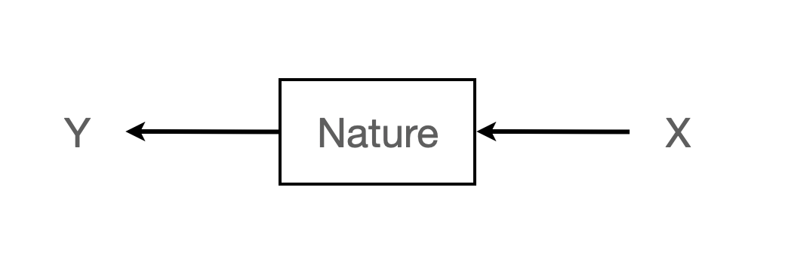
- Prediction 예측: 미래의 입력 변수(input, X)에 대해 어떤 반응(reponse, Y)이 나올지 예측할 수 있는 기능
- Information 정보: 자연이 응답 변수(reponse, Y)와 입력 변수(input, X)를 어떻게 연관시키는지에 대한 정보를 추출
전통적 통계의 접근 방식: data modeling
머신러닝의 접근 방식: algorithmic modeling
The Data Modeling Culture
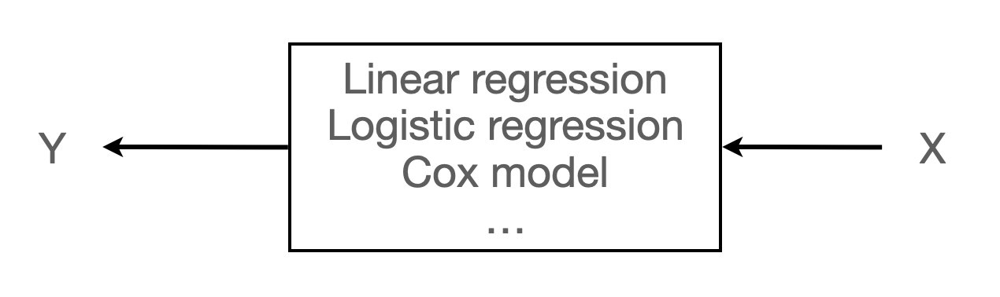
Y = f(X, random noise, parameters)
- 모델의 타당도(validation): goodness-of-fit 테스트와 잔차의 검토
- 통계학자의 98%
Parameter Estimation & Uncertainty
- 현재 관찰된 데이터는 어떤 모집단(population)으로부터 (독립적으로) 발생된 표본(sample)이라고 가정
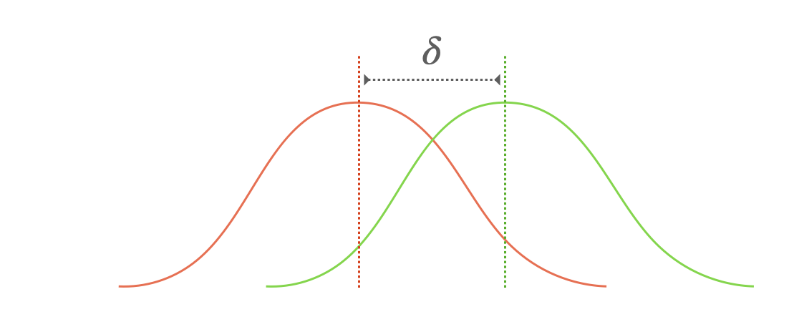
- 변수들 간의 관계성(relationships)을 파악하기 위해, 데이터 모델링은 현상에 대한 모델을 사전 설정(assumptions)하고,
- 예를 들어, 선형관계를 가정: \(y = \beta_0 + \beta_1 x_1 + \beta_2 x_2 + e\)
- 변수들의 값이 어떻게 발생하는지(generated)에 대한 가정을 세우고,
- 예를 들어, Gaussian, Binormial distribution, …
- 데이터와 가장 적합한(best fitted) 특정 모델을 선택 (즉, 파라미터 \(\beta s\)를 추정)
- 즉, 위의 선형 함수가 X, Y의 1) 관계를 나타내고, 2) 예측을 위해 사용됨
- 노이즈(noise)로부터 시그널(signal)을 분리: “true relationships”
- 그 파라미터의 불확실성(uncertainty)을 추정
- 모집단에 대한 추정이므로 불확실성이 존재
예를 들어,
{kind=link}
{kind=link}
{kind=link}
{kind=link}
{kind=link}
Source: Jiang, W., Lavergne, E., Kurita, Y., Todate, K., Kasai, A., Fuji, T., & Yamashita, Y. (2019). Age determination and growth pattern of temperate seabass Lateolabrax japonicus in Tango Bay and Sendai Bay, Japan. Fisheries science, 85, 81-98.
단순한 선형 모델의 예
다이아몬드 가격에 대한 예측 모델
{kind=link}
{kind=link}
{kind=link}
가정들:
X와 Y의 간의 true relationship: \(Y_i = \beta_0 + \beta_1 x_i + \epsilon_i\)
Noise/residual의 분포: \(\epsilon_i \sim N(0, \sigma^2)\)
- Mean function: \(E(Y | X = x_i) = \beta_0 + \beta_1 x_i\)
- Variance function: \(Var(Y | X = x_i) = \sigma^2\)
- Distribution: \((Y | X = x_i) \sim N(\beta_0 + \beta_1 x_i, \sigma^2)\)
파라미터의 추정 및 불확실성:
- \(\hat{\beta}_0 = 0.4, \hat{\beta}_1 = 5123, \hat{\sigma} = 300\)
- 95%의 확률로 \(\beta_0 \in (0.3, 0.5), \beta_1 \in (4823, 5423)\)
- \(\widehat{price}_i = 0.4 + 5123 \cdot carat\) : “평균적으로 다이아몬드가 1 carat 커질 때마다 $5123 비싸짐”
- 노이즈로부터 관계에 관한 시그널을 추출한 것으로 볼 수 있음
데이터 모델의 한계
- 과연 가정한 모델이 자연/현상을 잘 모방하고 있는가?
has at its heart the belief that a statistician, by imagination and by looking at the data, can invent a reasonably good parametric class of models for a complex mechanism devised by nature.
핵심은 통계학자가 상상력을 발휘하고 데이터를 살펴보면 자연이 고안한 복잡한 메커니즘에 대해 합리적으로 좋은 파라메트릭 클래스의 모델을 발명할 수 있다는 믿음입니다. (번역 by DeepL)
The belief in the infallibility of data models was almost religious. It is a strange phenomenon—once a model is made, then it becomes truth and the conclusions from it are infallible.
데이터 모델의 무오류성에 대한 믿음은 거의 종교에 가까웠습니다. 일단 모델이 만들어지면 그것이 진리가 되고 그 모델에서 도출된 결론은 오류가 없다고 믿는 이상한 현상입니다. (번역 by DeepL)
- 모델이 데이터에 얼마나 잘 맞는지에 대한 논의가 거의 없음
- 특히, 주로 예-아니오로 답하는 적합도 테스트를 통해 모델의 적합성을 판단
- 주로 독창적인 확률 모형을 찾는데 주력
- (가정한) 모델을 데이터에 맞출 때 결론은 자연의 메커니즘이 아니라 모델의 메커니즘에 관한 것이 됨
- 모델이 자연을 제대로 모방하지 못하면 결론이 잘못될 수 있음
데이터 모델의 다양성
- 데이터 모델링의 가장 큰 장점: 입력 변수와 응답 간의 관계를 간단하고 이해하기 쉬운 그림으로 표현 가능
- 하지만, 데이터에 동일하게 적합한 여러 모델이 존재
- 적합성(goodness-of-fit)에 대한 기준이 통계적 검정을 통한 예-아니오로 판별
- 관찰한 데이터로만 모델의 파라미터를 추정하기 때문에, 과적합이 발생하며, 새로운 데이터에 대한 예측 정확도가 떨어질 수 있음
- 편향되지 않은 예측 정확도 추정치를 얻으려면 교차 검증(cross-validation)을 사용하거나 일부 데이터를 테스트 집합(test set)으로 따로 떼어 놓을 필요가 있음
모형의 가정에 위배
- 일반적으로 의료 데이터, 재무 데이터와 같이 복합 시스템에서 생성된 데이터에 단순한 파라메트릭 모델을 적용하면 알고리즘 모델에 비해 정확성과 정보가 손실될 수 있음
- 현실에서 데이터의 발생 메커니즘(확률 분포)에 대한 가정이 성립되기 어려움
- 모델을 가정하기보다는 데이터와 실제로 처한 문제로부터 해결책을 찾아 갈 필요가 있음.
“If all a man has is a hammer, then every problem looks like a nail.”
불확실성에 대한 가정에 대한 다른 접근
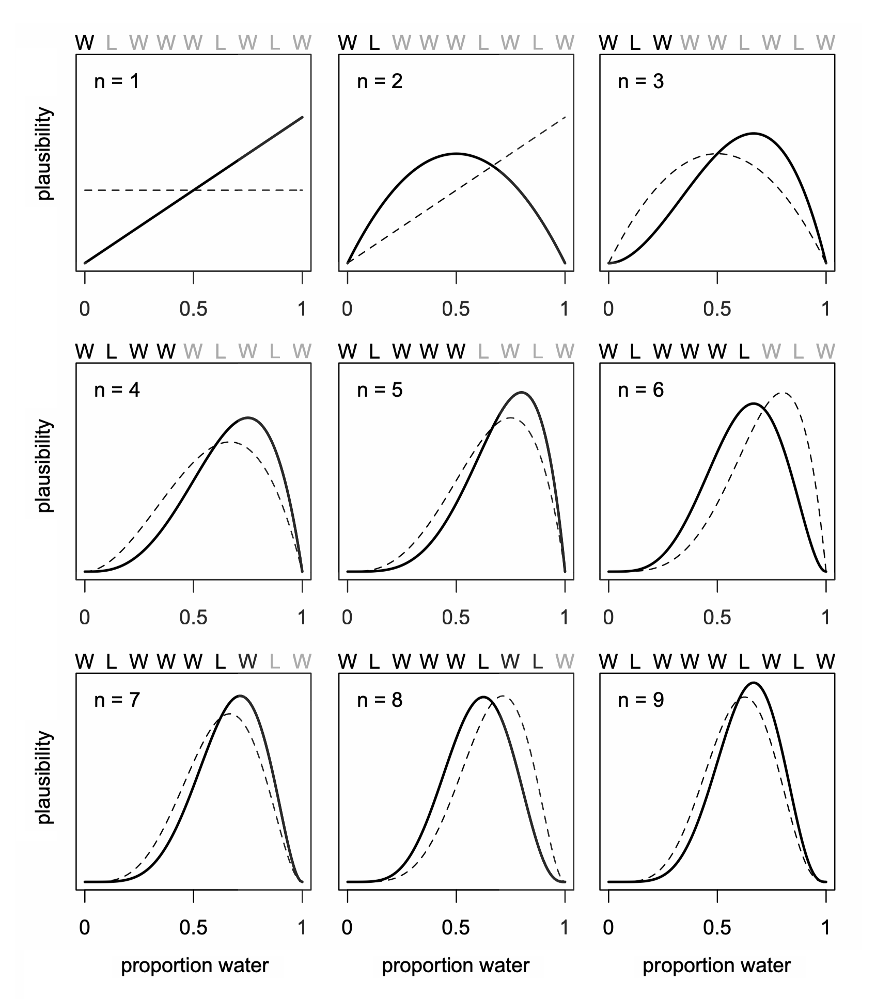
Source: McElreath, R. (2018). Statistical rethinking: A Bayesian course with examples in R and Stan. Chapman and Hall/CRC.
The Algorithmic Modeling Culture
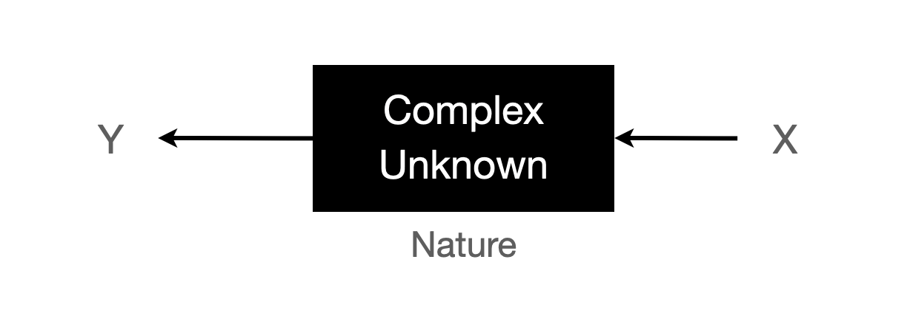
자연의 복잡하고 신비하며 적어도 부분적으로는 알 수 없는 블랙박스에서부터 데이터가 생성된다고 가정
데이터로부터 반응 Y를 예측을 하기 위해 X에 작용하는 알고리즘 함수 f(X)를 찾고자 함
- 가정: 데이터가 어떤 분포로부터 독립적으로 발생(i.i.d. Independent & identically distributed)
- 모델의 타당도 지표: 예측 정확도 (predictive accuracy)
- 통계학자의 2%
예를 들어, 야구 선수의 연봉을 예측하기 위한 결정 트리 모델 (regression tree)
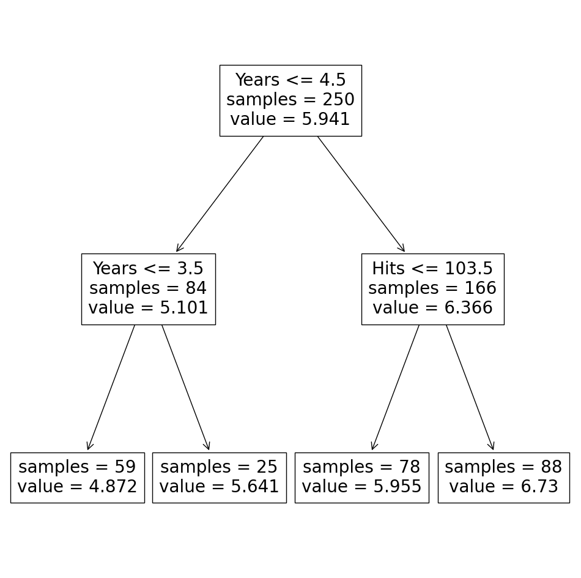
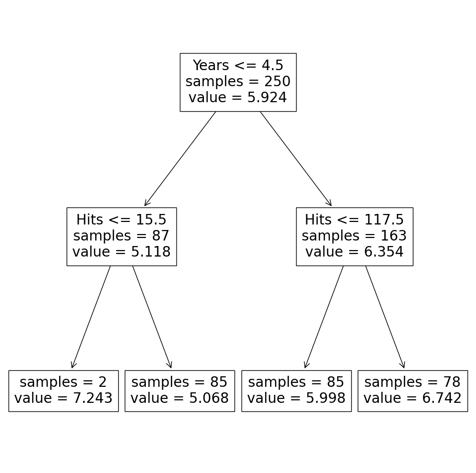
- 다양한 방식의 여러 결정 트리 모델을 생성 후
- 이들을 결합(aggregating)하여 평균을 내어 예측 정확도를 높일 수 있음
새로운 연구 커뮤니티
- 젊은 컴퓨터 과학자, 물리학자, 엔지니어와 나이든 몇 명의 통계학자 등이 주도
- 1980년대 초 리처드 올슨의 연구를 시작으로 의료 데이터 분석에 조금씩 진출하기 시작
- 1980년대 중반에 두 가지 강력한 새 알고리즘, 즉 신경망(neural network)과 의사 결정 트리(tree)가 등장
- 1990년대 통계학에서도 smoothing spline 알고리즘, cross validation을 사용한 데이터에 대한 적용에 관한 연구가 존재
- 1990년대 중반에는 Vapnik의 서포트 벡터 머신(support vector machine)이 등장
- 예측 정확도를 목표로, 음성 인식, 이미지 인식, 비선형 시계열 예측, 필기 인식, 금융 시장 예측 등 데이터 모델을 적용할 수 없는 것이 분명한 복잡한 예측 문제를 해결
머신 러닝 분야로부터의 레슨
좋은 모델의 다양성 (multiplicity)
- 예측도가 비슷한 전혀 다른 모델이 존재할 수 있는데
- 이 모델들을 결합(aggregating)하면 예측 정확도를 높일 수 있으며, 단일한 모델로 환원할 수 있음
단순성 대 정확성 (simplicity vs. accuracy)
The Occam’s Dilemma
- 예측에 있어 정확성과 단순성(해석 가능성)은 상충됨
- 정확도를 높이려면 더 복잡한 예측 방법이 요구
- 단순하고 해석 가능한 함수는 예측력이 높지 못함
- 예측 정확도를 먼저 추구한 후 그 이유를 이해하는 것이 더 낫다고 제안
- 목표 지향적인 관점에서 보면 오컴의 딜레마는 존재하지 않음
차원의 저주 (the curse of dimensionality)
Digging It Out in Small Pieces
- 전통적으로 변수가 많을수록 좋지 않다고 여겼으나,
- Tree나 neural network에서는 변수가 많은 것이 문제가 되지 않고, 오히려 작은 정보들이 추가됨
- 예를 들어, 30개의 예측 변수로부터 4차항들을 추가하면 약 40,000개의 새로운 변수가 생성됨
- 이들의 정보는 분류에 도움이 되어 예측 정확도를 높일 수 있음
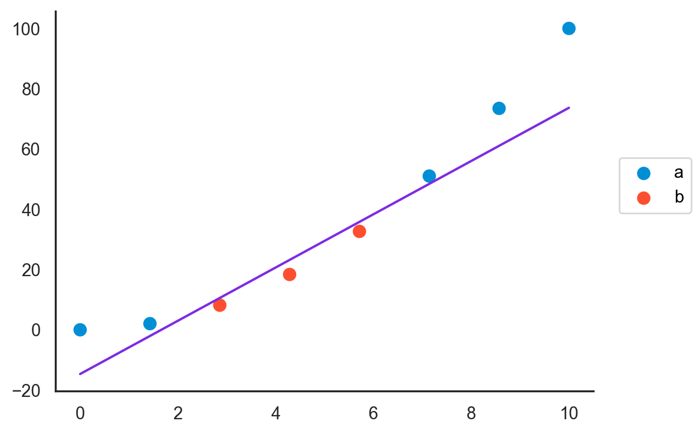
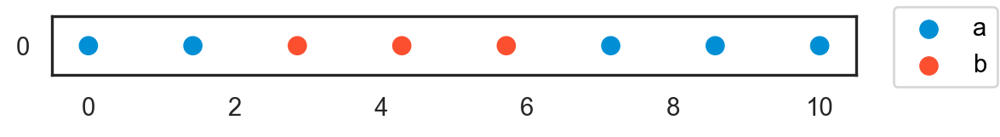
블랙박스로부터의 정보 추출
The goal is not interpretability, but accurate information.
“정확성(accuracy)과 해석 가능성(interpretability) 중 하나를 선택해야 한다면, 그들은 해석 가능성을 택할 것입니다.
정확성과 해석 가능성 사이의 선택으로 질문을 구성하는 것은 통계 분석의 목표가 무엇인지에 대한 잘못된 해석입니다.
모델의 핵심은 응답(Y)과 예측 변수(X) 간의 관계에 대한 유용한 정보를 얻는 것입니다.
해석 가능성은 정보를 얻는 한 가지 방법입니다.
그러나 예측 변수와 응답 변수 간의 관계에 대한 신뢰할 수 있는 정보를 제공하기 위해 모델이 반드시 단순할 필요는 없으며, 데이터 모델일 필요도 없습니다.” (번역 by DeepL)
- 예측 정확도가 높을수록 기본 데이터 메커니즘에 대한 더 신뢰할 수 있는 정보가 내재함
- 예측 정확도가 낮으면 의심스러운 결론을 내릴 수 있음
- 알고리즘 모델은 데이터 모델보다 예측 정확도가 더 높으며, 기본 메커니즘에 대한 더 나은 정보를 제공할 수 있음.
예를 들어,
- 의료 데이터와 같이 변수가 데이터에 비해 상대적으로 매우 많은 경우, 더 신뢰만한 변수들의 중요도를 추출할 수 있었음
- 클러스터링과 같은 유사한 패턴을 보이는 군집들을 발견할 수 있었음
- 유전자 분석처럼 데이터 모델을 생각하기 어려운 곳에 적용 가능; 머신러닝은 변수가 많을수록 좋으며, 과적합하지 않음
결론
통계의 목표는 데이터를 사용하여 예측하고 기본 데이터 메커니즘에 대한 정보를 얻는 것입니다. 데이터와 관련된 문제를 해결하기 위해 어떤 종류의 모델을 사용해야 하는지는 석판에 적혀 있지 않습니다. 제 입장을 분명히 말씀드리자면, 저는 데이터 모델 자체를 반대하는 것이 아닙니다. 어떤 상황에서는 데이터 모델이 문제를 해결하는 가장 적절한 방법일 수 있습니다. 하지만 문제와 데이터에 중점을 두어야 합니다. (번역 by DeepL)
The goals in statistics are to use data to predict and to get information about the underlying data mechanism. Nowhere is it written on a stone tablet what kind of model should be used to solve problems involving data. To make myposition clear, I am not against data models per se. In some situations they are the most appropriate wayto solve the problem. But the emphasis needs to be on the problem and on the data.
올바른 모델의 필요성
천체의 움직임에 대한 모델
프톨레마이오스(CE 100년 출생, 이집트)의 지동설 모델
- 행성의 움직임에 수학적 모델은 매우 정확했으며, 천 년 넘게 활용되었음
- 적절한 위치에 충분한 에피사이클을 배치하면 행성의 움직임을 매우 정확하게 예측할 수 있음
Source: McElreath, R. (2018). Statistical rethinking: A Bayesian course with examples in R and Stan. Chapman and Hall/CRC.
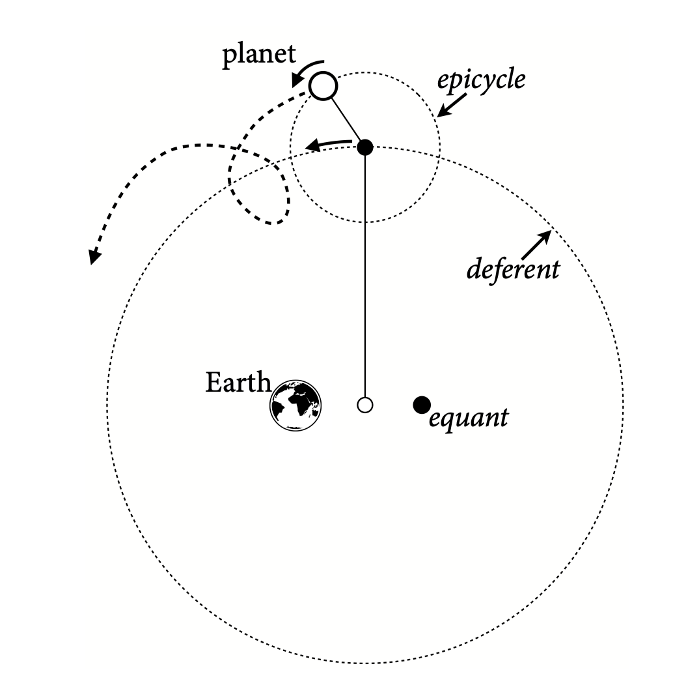
Maya Astronomy
- 천체의 운행에 대한 정교한 계산법 개발
- 예를 들어, 일식과 월식, 계절의 변화를 예측
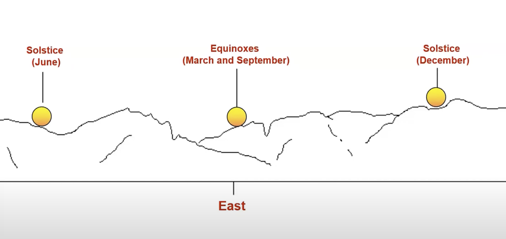
과학적 발견의 프로세스
- 추측 > 모델링 > 관측/실험
- 계산된 결과(예측)와 실제 결과(관측)의 비교를 통해 모델의 타당성을 판단
- 결코 모델이 참인지 확신할 수 없음: 즉 true model은 존재하지 않을 수 있음
- 뉴튼 역학 -> 상대성 이론에 의해 수정
- 모델이 틀린지에 대해서는 확신할 수 있음
- 그럼에도 불구하고, 모델이 없는 과학은 위험할 수 있음
두 문화의 결합
원자의 움직임에 대한 슈뢰딩거 방정식
\(\displaystyle \left( -\frac{{\hbar^2}}{{2m}} \frac{{1}}{{r^2}} \frac{{\partial}}{{\partial r}} \left( r^2 \frac{{\partial}}{{\partial r}} \right) - \frac{{\hbar^2}}{{2m r^2}} \left( \frac{{\partial^2}}{{\partial \theta^2}} + \cot \theta \frac{{\partial}}{{\partial \theta}} + \frac{{1}}{{\sin^2 \theta}} \frac{{\partial^2}}{{\partial \phi^2}} \right) - \frac{{k e^2}}{{r}} \right) \psi(r,\theta,\phi) = E \psi(r,\theta,\phi)\)
- 이 방정식을 이용해 synthetic data를 생성: 현실에 대한 simulation
- 이 데이터를 이용해 머신러닝 모델을 학습: 물질의 속성에 대해 학습
- 그 모델을 이용해 많은 새로운 후보 물질들 중에 유용한 것을 매우 빠르게 걸러낼 수 있음
- 예측 모형의 다양한 활용 가능성을 보여줌
The Third School: Causal Inference
Data is a window, not a mirror to reality!
The Grammar of Science (1892), by Karl Pearson
특정 시퀀스가 과거에 발생하고 반복되었다는 것은 경험의 문제이며, 인과라는 개념 안에서 그렇게 표현합니다. 미래에도 계속 반복될 것이라는 것은 신념의 문제이며, 확률이라는 개념 안에서 그렇게 표현합니다. 과학은 어떤 경우에도 시퀀스에 내재된 필연성을 입증할 수 없으며, 시퀀스가 반드시 반복되어야 한다는 것을 절대적으로 확실하게 증명할 수도 없습니다. 과거에 대한 과학은 묘사이고 미래에 대한 과학은 믿음입니다;
That a certain sequence has occurred and recurred in the past is a matter of experience to which we give expression in the concept causation; that it will continue to recur in the future is a matter of belief to which we give expression in the concept probability. Science in no case can demonstrate any inherent necessity in a sequence, nor prove with absolute certainty that it must be repeated. Science for the past is a description, for the future a belief; (Pearson, 1892, p. 113).
인과 관계라는 개념은 현상에서 개념적 과정을 통해 추출된 것으로, 논리적 필연도 아니고 실제 경험도 아닙니다…. 우주에 대한 더 넓은 관점에서보면 모든 현상은 상관관계로서 보이지만, 인과적으로는 관계하지 않는 것으로 보입니다.
the idea of causation is extracted by conceptual processes from phenomena, it is neither a logical necessity, nor an actual experience…. The wider view of the universe sees all phenomena as correlated, but not causally related. (Pearson, 1892, p. 177)
- Positivism: 우주가 인간 사고의 산물이며 과학은 그 사고에 대한 설명일 뿐이라고 주장
- 인간의 뇌 밖의 세계에서 일어나는 객관적인 과정으로 해석되는 인과관계는 과학적 의미를 가질 수 없음
- 오직 관찰된 패턴만을 반영할 수 있으며, 이는 상관관계로 설명될 수 있음
- 피어슨은 인과관계를 분석의 언어에서 배제시키고, 이후 그 전통이 통계학에서 어어짐
Sewall Wright
- Path diagrams라는 데이터에서 인과 관계에 대한 질문에 답하는 수학적 방법을 최초로 개발
- 실제로 인과 분석의 툴로 이어지지는 못하였고,
- Path analysis(경로 분석)이라는 통계 기법으로 어어졌으나 뿌리 깊은 오해의 씨앗이 되었음.
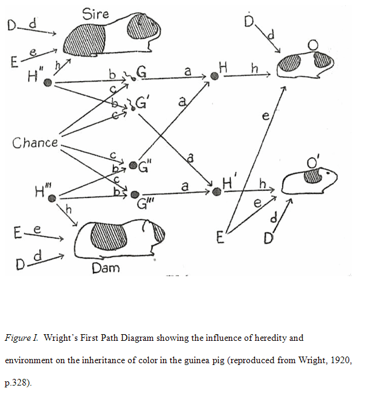
기니피그의 털색에 영향을 미치는 요인을 설명하는 경로 다이어그램. D = 발달 요인(수태 후, 출생 전), E = 환경 요인(출생 후), G = 각 개별 부모의 유전적 요인, H = 부모 모두의 유전적 요인을 합친 것, O, O′ = 자손. 분석의 목적은 D, E, H(다이어그램에서는 D, E, H로 표기)의 영향력을 추정하는 것

from Wikipedia
Path Analysis
{kind=link}
{kind=link}
Causal Revolution
Source: The Book of Why: The New Science of Cause and Effect by Judea Pearl, Dana Mackenzie (2018)

Association
- 관찰을 기반으로 규칙성 발견하고 예측
- 올빼미가 쥐의 움직임을 관찰하고 잠시 후 쥐가 어디에 있을지를 파악
- 컴퓨터 바둑 프로그램이 수백만 개의 바둑 게임 데이터베이스를 연구하여 어떤 수와 승률이 높은지 알아내는 것
- 하나의 이벤트를 관찰하면 다른 이벤트를 관찰할 가능성이 달라진다면, 하나의 이벤트가 다른 이벤트와 연관되어 있다고 말할 수 있음
- “치약을 구매한 고객이 치실도 구매할 가능성이 얼마나 되는가?”; \(P(치실 ~| 치약~)\)
- 통계의 핵심: 상관관계, 회귀
- 올빼미는 쥐가 왜 항상 A 지점에서 B 지점으로 가는지 이해하지 못해도 훌륭한 사냥꾼이 될 수 있음
- 위스키 한 병을 들고 있는 보행자가 경적을 울릴 때 다르게 반응할 가능성이 있다는 것을 기계가 스스로 파악할 수 있는가?
- Association 단계의 한계: 유연성과 적응성의 부족
Intervention
- 관찰을 넘어, 세상에 대한 개입
- “치약 가격을 두 배로 올리면 치실 판매량은 어떻게 될까?”
- 데이터에는 없는 새로운 종류의 지식을 요구
- 통계학의 언어로는 이 질문을 표현하는 것조차 불충분함
- 수동적으로 수집된 데이터만으로는 이러한 질문에 대답할 수 없음
- 과거의 데이터를 이용하면?
- 과거에 가격이 두 배 비쌌을 때, 치실 판매량으로 추론?
- 이전에 가격이 두 배 비쌌을 때, 다른 이유가 있었을 수 있음
- 전통적으로 실험을 통해 해결
- 정확한 인과 관계 모델이 있으면 관찰 데이터만으로도 가능; \(P(치실 ~| ~do(치약~))\)
- 사실, 일상 생활에서 항상 개입을 수행: 어떻게(How) 하면 두통이 사라질까?
Counterfactuals
- 두통이 사라졌다면 왜(Why) 그럴까?
- 약을 먹지 않았어도 두통이 사라졌을까?: 가상의 세계 (counterfactual world)
- “현재 치약을 구매한 고객이 가격을 두 배로 올려도 여전히 치약을 구매할 확률은 얼마인가?”
- 우리는 현실 세계(고객이 현재 가격으로 치약을 구매했다는 것을 알고 있는)와 가상의 세계(가격이 두 배 높은 경우)와 비교
- 보이는 세계 볼 수 있는 새로운 세계 볼 수 없는 세계(보이는 것과 모순)
- 이를 위해서는 “이론” 또는 “자연의 법칙”이라고 볼 수 있는 근본적인 인과 과정의 모델이 필요
전형적인 인과적 질문들
- How effective is a given treatment in preventing a disease?
- Was it the new tax break that caused our sales to go up? Or our marketing campaign?
- What is the annual health-care costs attributed to obesity?
- Can hiring records prove an employer guilty of sex discrimination?
- I am about to quit my job, will I regret it?
번역 by DeepL
- 특정 치료법이 질병 예방에 얼마나 효과적일까요?
- 새로운 세금 감면 혜택이 매출 상승의 원인이었을까요? 아니면 마케팅 캠페인 때문이었나요?
- 비만으로 인한 연간 의료 비용은 얼마인가요?
- 채용 기록으로 고용주의 성차별을 입증할 수 있나요?
- 직장을 그만두려고 하는데 후회하게 될까요?
DAG
Directed acyclic graph (DAG): 인과 관계 다이어그램
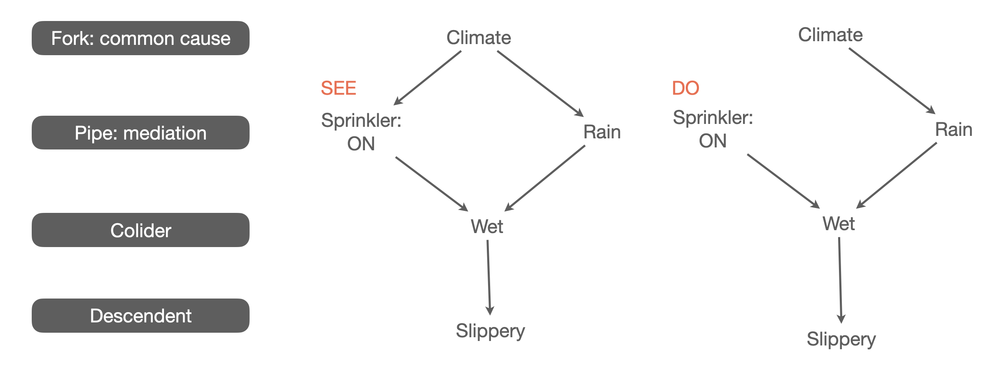
Source: Causality: Models, Reasoning, and Inference (2000) by Judea Pearl
Confounding
신발을 신고 잠든 다음날 두통이 생긴다면?
Fork:Common Cause
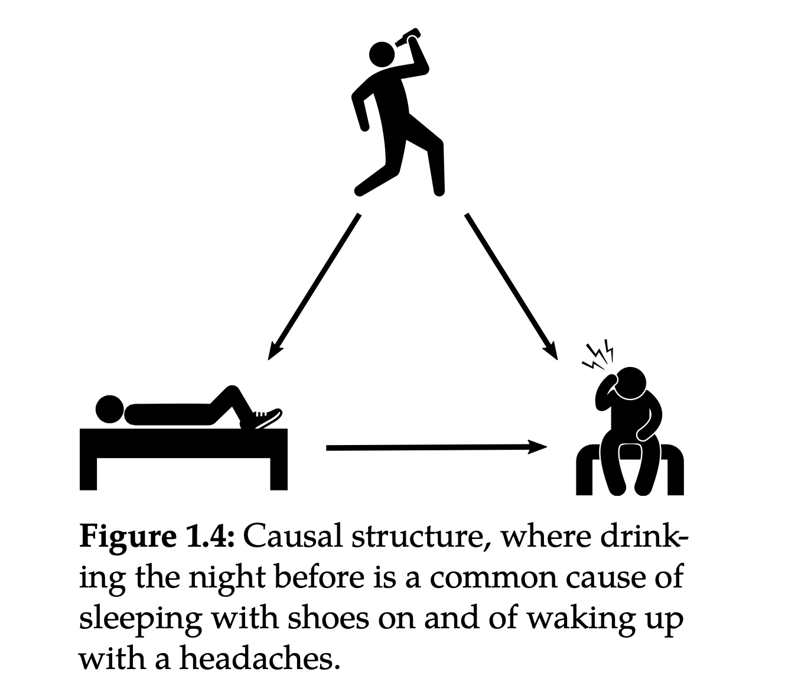
Source: Introduction to Causal Inference (ICI) by Brady Neal
운동능력이 뛰어나면 지능이 떨어지는가?
Colider: Common Effect
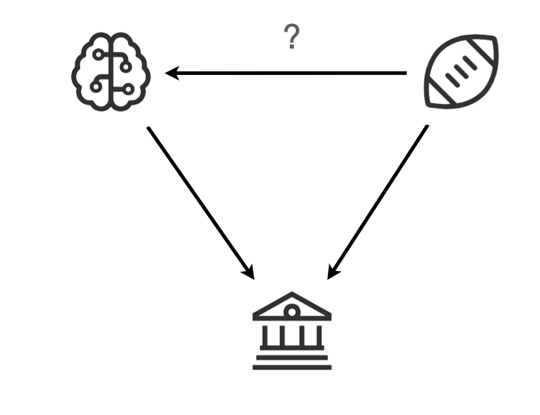
일반적으로, 표면적으로 드러난 변수간의 관계가 숨겨진 다른 변수들(lurking third variables)에 의해 매개되어 있어 진실한 관계가 아닌 경우, confounding 혹은 confounder가 존재한다고 함.
극단적이지만 이해하지 쉬운 예로는
- 초등학생 발 사이즈 → 독해력
- 머리 길이 → 우울증

Simpson’s paradox
아래 첫번째 그림은 집단 전체에 대한 플랏이고, 두번째 그림은 나이대별로 나누어 본 플랏
전체 집단을 보면 운동을 많이 할수록 콜레스테롤이 증가하는 것으로 보이나,
나이대별로 보면, 상식적으로 운동이 긍정적 효과가 나타남.
왜 그렇게 나타나는가?

Source: The book of why by Judea Pearl
COVID-27
Source: Introduction to Causal Inference (ICI) by Brady Neal
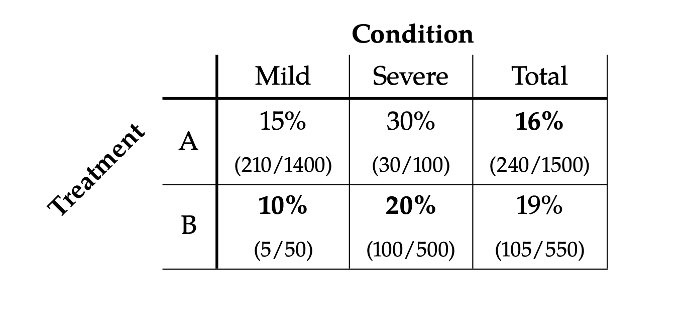
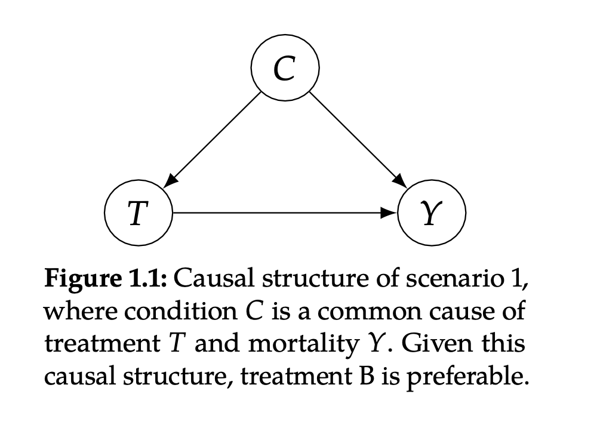
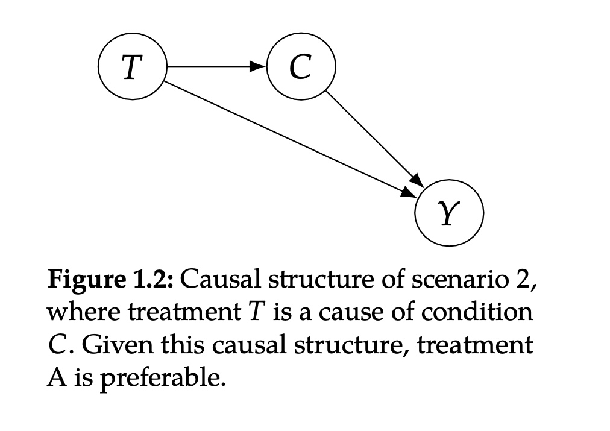
학생들의 과제는 성적에 영향을 주는가?
Source: National Education Longitudinal Study of 1988 (NELS:88)
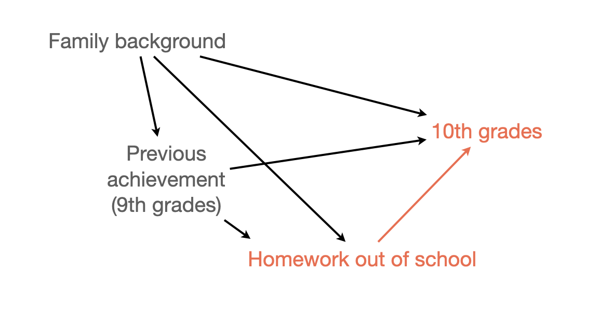